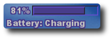

| My fvwm config |
Here you can find my config file for fvwm, the best window manager around ;-)
My desktop is mainly keyboard oriented. I removed the window titles in order to gain scren space. Actually, I don't need the titles in most windows to know what they are (informative prompts in shells go a long way) and I can access the functionality of the title buttons quicker via keystrokes. The mandatory screenshot is thus not so impressive, but here it is:
{kind=link}
Some interesting features:
- You can assign numbers (up to 10 per screen) to windows and jump to them quickly using the keyboard.
- Names not only for desktops, but also for pages within desktops. You can navigate and move windows using these names (see screenshot).
- Creation and destruction of desktops "on the fly" (in reality is only a restart of FvwmPager, but it looks impressive for "non-fvwmers" ;-).
- Automatically sorting of shaded windows to keep the desktop clean (see screenshot).
- Mail programm (MUTT) accessible everywhere with only a keystroke.
- WMII-like arrangement of windows (example).
- "Expose"-like display of open windows (resizing them, i.e. no cool 3D smooth effects).
{kind=link}
Here you can find the scripts I use (clock, mail notification, page name display and quota display). Also included is a battery status monitor I use on my laptop (which has a similar config, but with window titles).

List of keybindings
I write this list mainly for personal reference, but it should help if you want to use my config. (Nearly) All keybinding use the fvwm key, formerly known as "windows-key". (Note: I use an american keyboard). This list is probably outdated, but most of the bindings listed should still be valid.- fvwm+Tab: Cycle through windows
- fvwm+shift+Tab: Cycle through windows in reverse order
- fvwm+\: Cycle through windows without rising them
- fvwm+[: Cycle through windows of a certain type
- fvwm+]: Cycle through windows of a certain type in reverse order
- fvwm+shift+[: Cycle through windows of a certain type without rising them
- fvwm+shift+]: Cycle through windows of a certain type in reverse order without rising them
- fvwm+Z: Raise/lower a window
- fvwm+Space: show the list of windows in current page
- fvwm+shift+Space: show the list of all open windows
- fvwm+directions: circulate through pages (NOT stopping at desk boundaries!)
- fvwm+shift+directions: move current window across pages
- fvwm+X: open terminal
- fvwm+C: open calender
- fvwm+shift+C: open calculator
- fvwm+F1: maximize current window
- fvwm+shift+F1: maximize current window to fullscreen
- fvwm+F2: maximize current window vertically
- fvwm+F3: maximize current window horizontally
- fvwm+F4: iconify current window
- fvwm+shift+F4: shade current window
- fvwm+KP_Up: resize window to upper half of the screen
- fvwm+KP_Down: resize window to lower half of the screen
- fvwm+KP_Left: resize window to left half of the screen
- fvwm+KP_Right: resize window to right half of the screen
- fvwm+KP_Home: resize window to upper left quarter of the screen
- fvwm+KP_PgUp: resize window to upper right quarter of the screen
- fvwm+KP_End: resize window to lower left quarter of the screen
- fvwm+KP_PgDn: resize window to lower right quarter of the screen
- fvwm+Q: close current window
- fvwm+shift+Q: destroy current window
- fvwm+M: Move window
- fvwm+shift+M: Resize window
- fvwm+Control+KPdirections: move current window in given direction
- fvwm+KP_5: center window
- fvwm+shift+KPdirections: resize current window in given direction
- fvwm+control+number: assign number to window
- fvwm+number: jump to window with given number
- fvwm+shift+number: focus with given number (do not raise)
- fvwm+R: run dialog
- fvwm+`: show MUTT window
- fvwm+BackSpace: raise/lower pager
- Menu: show list of pages to jump to
- control+Menu: show current desk and page name (using osd_cat)
- shift+Menu: change page name
- shift+control+Menu: change desk name
- fvwm+Menu: menu move current window to page
- fvwm+shift+Menu: menu move all windows to desk
- fvwm+D: "create" desk
- fvwm+control+D: "delete" desk
- control+Pause: lock screen (and do some time accounting)
- control+shift+Pause: lock screen (but don't do time accounting)
- fvwm+S: shade all windows of current page
- fvwm+shift+S: unshade all windows of current page
- fvwm+I: iconifies all windows of current page
- fvwm+shift+I: iconifies all windows of current page
- fvwm+P: show pointer location (via FvwmAnimate)
- fvwm+T: toggle window title
- fvwm+K: show keyboard map
| Sudokus |
Here you can download a sudoku solving/generating program I wrote in python. It supports not only "traditional" sudokus, but also "exotic-sized" ones (see screenshots below), and it is guaranteed that every generated sudoku can be solved using only logical deductions, no guessing is needed. It requires python 2.4 or newer and the Tk python bindings. So far I only tested on linux, but it should also work on other platforms.
| Vim color file |
It seems I'm slowly changing from emacs to vim for programm-editing purposes (but I remain in emacs for LaTeX until someone shows me an equivalent to reftex in vim). I didn't find any sensible green-on-black color scheme, so I built my own, starting from the provided "torte" color scheme and taking over the color I got accostumed to in emacs. You can find it here.